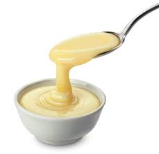
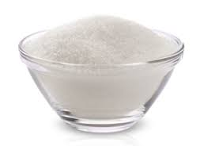
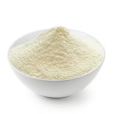

Receita Pavê
Ingredientes (10 porções)
 1 caixa ou lata de leite condensado
 2 caixas de creme de leite (400 g)
 1 xícara (chá) de leite em pó (use a xícara de 250 ml)
1 pacote de bolachas maisena ou maria
Modo de preparo
Tempo de preparo: 40 minutos
-
Misture bem o leite condensado com o creme de leite.
-
Junte o leite em pó e mexa até ficar homogêneo.
- Despeje um pouco do creme em refratário (ou potes para vender) e faça uma camada de bolachas (se quiser mais úmido, molhe em leite).
Vá intercalando as camadas até acabarem os ingredientes, encerrando com creme ou, se preferir, com ganache de chocolate branco ou preto.
Leve ao freezer ou congelador por 2 horas para firmar.
Transfira para a geladeira e sirva polvilhado com leite em pó ou decorado a gosto.